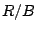
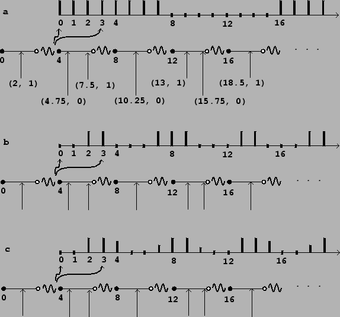
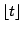
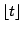
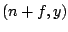
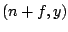
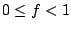
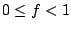
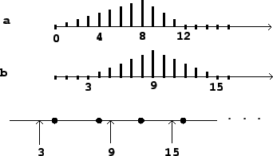

Control computations may come from a variety of sources, both internal and external to the overall computation. Examples of internally engendered control computations include sequencing (in which control computations must take place at pre-determined times) or feature detection of the audio output (for instance, watching for zero crossings in a signal). Externally engendered ones may come from input devices such as MIDI controllers, the mouse and keyboard, network packets, and so on. In any case, control computations may occur at irregular intervals, unlike audio samples which correspond to a steadily ticking sample clock.
We will need a way of describing how information
flows between control and audio computations, which we will base on the
notion of a
control stream.
This is simply a collection of numbers--possibly empty--that appear as a result of control
computations, whether
regularly or irregularly spaced in logical time.
The simplest possible control stream has no information other than a
time sequence:
Control streams may be shown graphically as in Figure 3.3. A number line shows time and a sequence of arrows points to the times associated with each event. The control stream shown has no data (it is a time sequence). If we want to show data in the control stream we will write it at the base of each arrow.
A
numeric control stream
is one that contains one number per time point, so that it
appears as a sequence of
ordered pairs:
A numeric control stream is roughly analogous to a ``MIDI controller", whose values change irregularly, for example when a physical control is moved by a performer. Other control stream sources may have higher possible rates of change and/or more precision. On the other hand, a time sequence might be a sequence of pedal hits, which (MIDI implementation notwithstanding) shouldn't be considered as having values, just times.
Numeric control streams are like audio signals in that both are just time-varying numeric values. But whereas the audio signal comes at a steady rate (and so the time values need not be specified per sample), the control stream comes unpredictably--perhaps evenly, perhaps unevenly, perhaps never.
Let us now look at what happens when we try to convert a numeric
control stream to
an audio signal. As before we'll choose a block size  . We will consider
as a control stream a square wave of period 5.5:
. We will consider
as a control stream a square wave of period 5.5:
Fast-as-possible conversion is most appropriate for control streams which do not change frequently compared to the block size. Its main advantages are simplicity of computation and the fastest possible response to changes. As the figure shows, when the control stream's updates are too fast (on the order of the block size), the audio signal may not be a good likeness of the sporadic one. (If, as in this case, the control stream comes at regular intervals of time, we can use the sampling theorem to analyze the result. Here the Nyquist frequency associated with the block rate  is lower than the input square wave's frequency, and so the output is aliased to a new frequency lower than the Nyquist frequency.)
|  |
Part (b) shows the result of nearest-sample conversion. Each new value of the
control stream at a time  affects output samples starting from index
 (the greatest integer not exceeding
affects output samples starting from index
 (the greatest integer not exceeding  ).
This is equivalent to using fast-as-possible conversion at a block size of 1;
in other words, nearest-sample conversion hides the effect of the larger block
size. This is better than fast-as-possible conversion in cases where the
control stream might change quickly.
).
This is equivalent to using fast-as-possible conversion at a block size of 1;
in other words, nearest-sample conversion hides the effect of the larger block
size. This is better than fast-as-possible conversion in cases where the
control stream might change quickly.
Part (c) shows sporadic-to-audio conversion, again at the nearest sample,
but now also using two-point interpolation to further increase the time
accuracy. Conceptually we can describe this as follows. Suppose the value
of the control stream was last equal to  , and that the next point is
, where
, and that the next point is
, where  is an integer and
is an integer and  is the fractional part of the
time value (so ). The first point affected in the audio
output will be the sample at index
is the fractional part of the
time value (so ). The first point affected in the audio
output will be the sample at index  . But instead of setting the output
to
. But instead of setting the output
to  as before, we set it to
as before, we set it to
Numeric control streams may also be converted to audio signals using ramp functions to smooth discontinuities. This is often used when a control stream is used to control an amplitude, as described in Section 1.5. In general there are three values to specify to set a ramp function in motion: a start time and target value (specified by the control stream) and a target time, often expressed as a delay after the start time.
In such situations it is almost always accurate enough to adjust the start and
ending times to match the first audio sample computed at a later logical time,
a choice which corresponds to the fast-as-possible scenario above. Figure
3.5 (part a) shows the effect of ramping from 0, starting at
time 3, to a value of 1 at time 9, immediately starting back toward 0 at
time 15, with block size  . The times 3, 9, and 15 are truncated to
0, 8, and 12, respectively.
. The times 3, 9, and 15 are truncated to
0, 8, and 12, respectively.
|  |
In real situations the block size might be on the order of a millisecond, and adjusting ramp endpoints to block boundaries works fine for controlling amplitudes; reaching a target a fraction of a millisecond early or late rarely makes an audible difference. However, other uses of ramps are more sensitive to time quantization of endpoints. For example, if we wish to do something repetitively every few milliseconds, the variation in segment lengths will make for an audible aperiodicity.
For situations such as these, we can improve the ramp generation algorithm to start and stop at arbitrary samples, as shown in Figure 3.5 (part b), for example. Here the endpoints of the line segments line up exactly with the requested samples 3, 9, and 15. We can go even further and adjust for fractional samples, making the line segments touch the values 0 and 1 at exactly specifiable points on a number line.
For example, suppose we want to repeat a recorded sound out of a wavetable 100 times per second, every 441 samples at the usual sample rate. Rounding errors due to blocking at 64-sample boundaries could detune the playback by as much as a whole tone in pitch; and even rounding to one-sample boundaries could introduce variations up to about 0.2%, or three cents. This situation would call for sub-sample accuracy in sporadic-to-audio conversion.